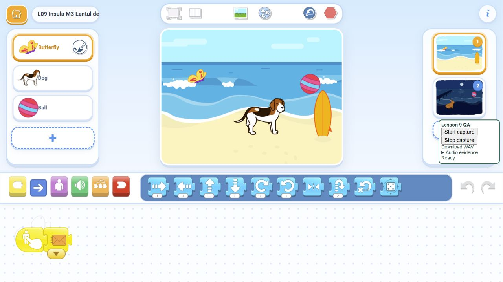

ScratchJr · Lecția 9 · 6–7 ani
Insula misterioasă 50 de minute · trei misiuni · un puzzle dificil · două rezerve suplimentare
Fiecare copil construiește și testează pe propria tabletă. Numai resurse din aplicație, fără importuri.
Ghid PDF Cartonașe PDF Soluții Testare Instrucțiuni Puzzle-uri și idei proprii Exemplu de pornire: Jocul are o regulă pe care o pot explica · Animated Genres - proiectul Game , adaptat pentru lecția noastră.
Minutele 37-45 · 8 minute pentru creația mea: Secretul insulei mele. Alege ce reprezintă descoperirile: un prieten ascuns, un indiciu și o ieșire, de exemplu. Adaugă un gest scurt care arată bucurie sau surpriză după apariția câinelui, înainte de următoarea comandă. Fiecare lucrează și testează pe propria tabletă.
Fiecare copil personalizează un program care îi funcționează. Provocarea dificilă și rezervele rămân disponibile; folosim numai biblioteca ScratchJr.
Ghidul profesorului · pas cu pas → Pregătește prima rundă cu steagul. Descoperă, ajungi la final și revii prin minge. Joacă din nou fără Reset.
Misiunea 1
Insula reacționează Două atingeri. Două surprize diferite.
Fluturele devine mare o clipă, apoi revine la mărimea inițială. Câinele dispare o clipă și reapare singur. Celălalt personaj nu se schimbă. Probează fiecare surpriză de două ori. Nu folosi Reset. Ambele reacții se termină și sunt gata pentru încă o încercare.
Misiunea 2
Ieșirea ascunsă Descoperă un lucru nou pe care îl poți atinge.
La steag, mingea este ascunsă. Un tap pe fluture o face vizibilă. Mingea te duce pe pagina de final. Acolo o altă minge te aduce înapoi. La întoarcere, ieșirea trebuie să fie iar ascunsă. Descoper-o din nou. Descoperire, final, întoarcere. Jocul este pregătit pentru încă o rundă.
Misiunea 3 - dificilă
Lanțul descoperirilor Fiecare descoperire deschide pasul următor.
După steag vezi numai fluturele. Câinele și mingea sunt ascunși. Fluture → apare câinele. Câine → apare mingea. Minge → pagina de final. Revino cu mingea de pe final și joacă din nou, fără Reset sau un nou steag. Doi pași de descoperire, în ordine. Două runde complete.
Rezervă 1 - 6-8 minute
Surpriza opțională Adaugă ceva distractiv care păstrează misterul.
Pornește de la lanțul dificil. Adaugă un iepure vizibil, separat de celelalte personaje. La atingere, iepurele face un truc și revine la normal. Nu dezvăluie câinele sau mingea. Încearcă trucul înaintea descoperirilor și după întoarcere. Lanțul trebuie să funcționeze. Trucul poate fi repetat. Descoperirile rămân în ordinea corectă.
Rezervă 2 - 8-10 minute
Două drumuri Două alegeri pot duce la aceeași ieșire.
Revino la varianta M2: fluture și câine vizibili, minge ascunsă. Fă atât fluturele, cât și câinele să dezvăluie mingea. Este suficient oricare dintre ei. Testează drumul prin fluture. Revino și testează separat drumul prin câine. Fiecare alegere funcționează singură, pornind cu ieșirea ascunsă.
Exemplu verificat în browser Lanțul descoperirilor în portul comunitar ScratchJr. Pe tablete folosim aplicația instalată.
